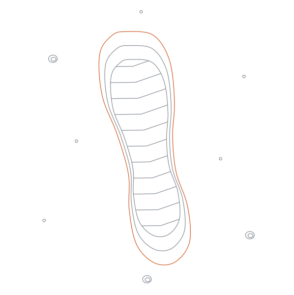

À propos
Je suis ingénieur développeur full stack, diplômé du Master Informatique de l'INSA Hauts-de-France. J'écris surtout du TypeScript : Angular et Ionic côté client, NestJS et PostgreSQL côté serveur, et du React Native pour le mobile.
Avant le code, il y a eu le design : trois ans de BUT MMI à Meaux. J'y ai pris l'habitude de tester une interface avec les gens qui vont s'en servir. Puis BTP-360 : pendant mon stage de fin d'études, seul, une application en production pour quatre sociétés.
Aujourd'hui, je cherche mon premier CDI. Je suis à Troyes, prêt à déménager, et ouvert à l'hybride comme au télétravail.

Ma façon de travailler

Partir des gens
Je pense d'abord à ceux qui vont se servir de l'outil, sur un chantier ou un casque VR sur la tête, et seulement ensuite à la stack. Le BUT MMI m'a appris à tester une interface avec les personnes qui vont s'en servir.

Tout écrire
La documentation, les décisions, les tests. Seul sur BTP-360, c’est ce qui m’a permis d’aller vite sans casser ce qui marchait déjà.

L’IA écrit vite, je décide
Je code avec des agents (Claude Code, Codex). Je cadre le besoin, j'écris la spécification, je relis chaque diff comme celui d'un collègue et je décide de ce qui part en production.
Parcours
-
2021Troyes
Le déclic
Bac STI2D, option Systèmes d'information et numérique, au lycée Saint-Joseph La Salle. J'y écris mes premiers programmes.
-
2021Meaux
Le détour par le design
Trois ans à Meaux pour un BUT MMI : code, UX, vidéo, graphisme.
-
2022Troyes
Mon premier outil métier
Deux mois d'assistant administratif chez Ophta Médical. En voyant le planning de l'équipe, j'ai construit un tableau qui calcule les heures et les heures supplémentaires de chacun.
« Il nous a apporté des idées pour compléter notre planning du personnel, en créant un tableau qui permet de calculer les heures de travail journalières et de visualiser les heures supplémentaires de chaque employé. »
-
2023Saint-André-les-Vergers
Premier site livré en entreprise
Trois mois chez Réseau Sûr France pour livrer leur nouveau site, avec l'équipe marketing et des demandes qui changent jusqu'au bout.
Réseau Sûr France« Ziyad a su mettre en avant ses compétences et son savoir-faire tout au long de son stage. Il s’est adapté très rapidement à l’entreprise, à sa charte graphique ainsi qu’à son fonctionnement. »
-
2023Troyes
Dix mois d'e-commerce
En alternance chez Distri Sûr France, j'ai conçu et développé la boutique en ligne, des maquettes Figma à la mise en ligne sur Odoo.
Distri Sûr France -
2024Valenciennes
Cap sur le métavers
Master Sciences et Technologies du Métavers à l'INSA Hauts-de-France : réalité virtuelle, IA, mobile, blockchain, big data. Et l'équipe e-sport de l'école entre deux rendus.
Réalité virtuelle -
2026Troyes
BTP-360, seul aux commandes
Stage de fin d'études chez Iso Sûr France : remplacer les fichiers Excel de quatre sociétés par une seule application, web et Android, en production sur AWS.
BTP-360 -
2026Troyes
Et maintenant
Diplômé, de retour à Troyes, je cherche mon premier CDI de développeur full stack. SubForge avance en parallèle.
SubForge


Langues
- Français bilingue
- Arabe langue maternelle
- Anglais C1
- Espagnol notions
Hors de l’écran : l’e-sport en semi-pro avec l’équipe de l’INSA, la guitare et le chant, la photo, la musculation (d’où SubForge) et les mangas, JoJo’s Bizarre Adventure en tête (assez pour en tirer une pub animée).
Stack
Chaque outil mène au projet qui le prouve. Plein : utilisé en production. Contour : utilisé sur des projets.
Front et mobile
- Angularprouvé par BTP-360, en production
- Ionicprouvé par BTP-360, en production
- NgRxprouvé par BTP-360, en production
- Capacitorprouvé par BTP-360, en production
- TypeScriptprouvé par BTP-360, SubForge, en production
- RxJSprouvé par BTP-360, en production
- React Nativeprouvé par SubForge, sur des projets
- Expoprouvé par SubForge, sur des projets
- Tailwindprouvé par Turaty Naturels, sur des projets
- Android (Java)prouvé par lolop, sur des projets
- Kotlinprouvé par Facture Android, sur des projets
Back-end et données
- NestJSprouvé par BTP-360, en production
- Prismaprouvé par BTP-360, en production
- PostgreSQLprouvé par BTP-360, SubForge, en production
- Socket.IOprouvé par BTP-360, SUBCHAINE, en production
- Supabaseprouvé par SubForge, sur des projets
- Node.jsprouvé par ZABI, SUBCHAINE, sur des projets
- MongoDBprouvé par ZABI, sur des projets
- Symfonyprouvé par Turaty Naturels, Gestionnaire d’articles, sur des projets
- MySQLprouvé par Turaty Naturels, Gestionnaire d’articles, sur des projets
- Odooprouvé par Distri Sûr France, en production
- Pythonprouvé par Prénoms et Hadoop, Wifi auto, sur des projets
IA appliquée
- Agents de code (Claude Code, Codex)prouvé par BTP-360, en production
- Revue du code généré par IAprouvé par BTP-360, en production
- Workflow multi-agentsprouvé par BTP-360, en production
- MCPprouvé par BTP-360, en production
- OCR local (ML Kit, PaddleOCR, Tesseract.js)prouvé par BTP-360, en production
- Intégration de LLM (Gemini)prouvé par SubForge, sur des projets
Mise en production et qualité
- Dockerprouvé par BTP-360, Turaty Naturels, en production
- AWSprouvé par BTP-360, en production
- Terraformprouvé par BTP-360, en production
- GitHub Actionsprouvé par BTP-360, en production
- Playwrightprouvé par BTP-360, en production
- Jestprouvé par SubForge, sur des projets
- Sentryprouvé par BTP-360, SubForge, en production
- Azureprouvé par Hôtel : gestion et paie, sur des projets